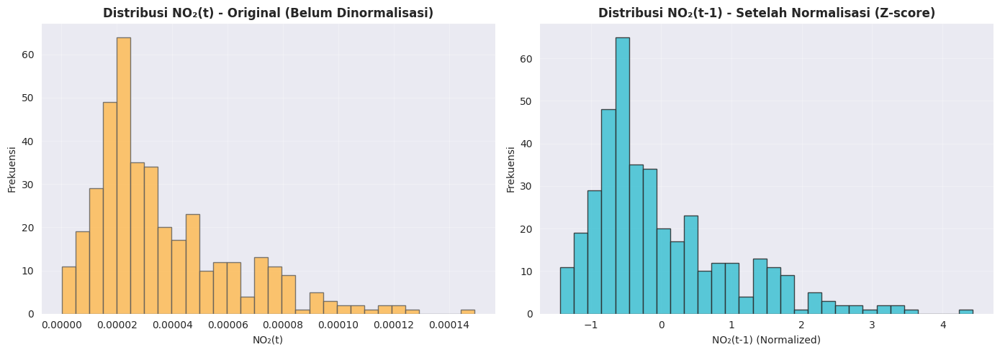
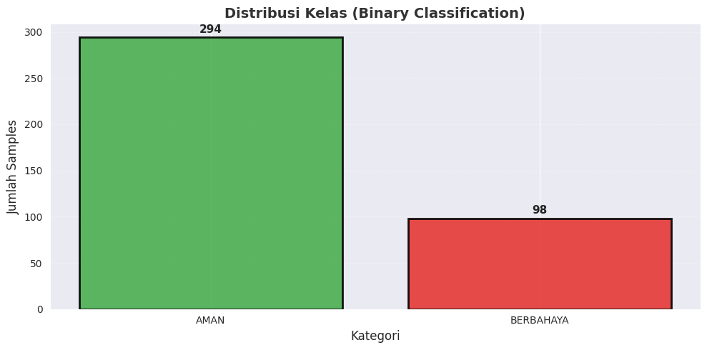
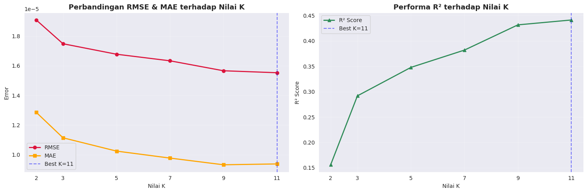
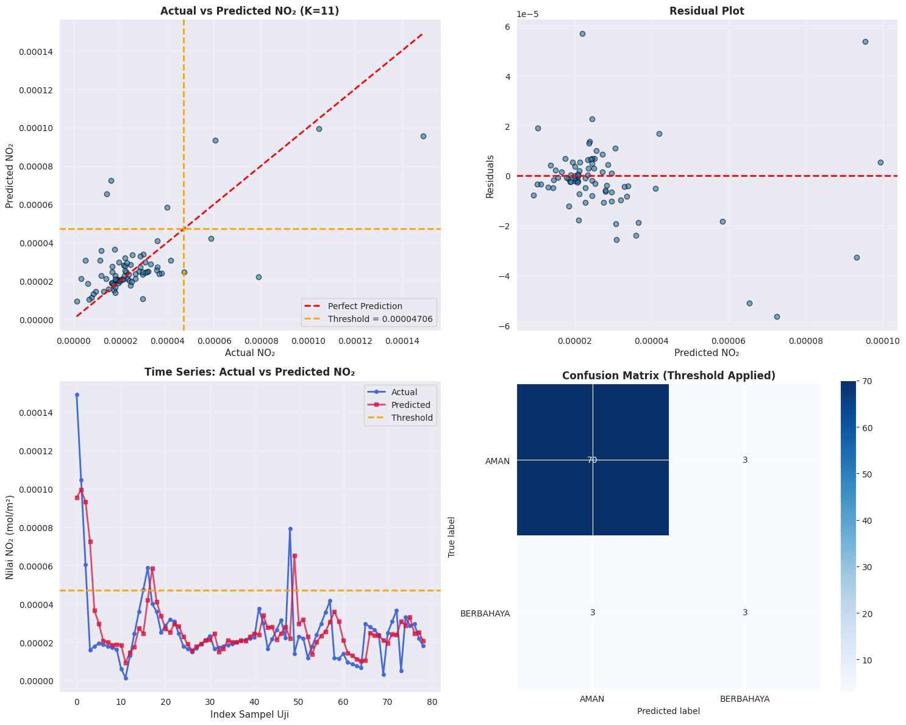
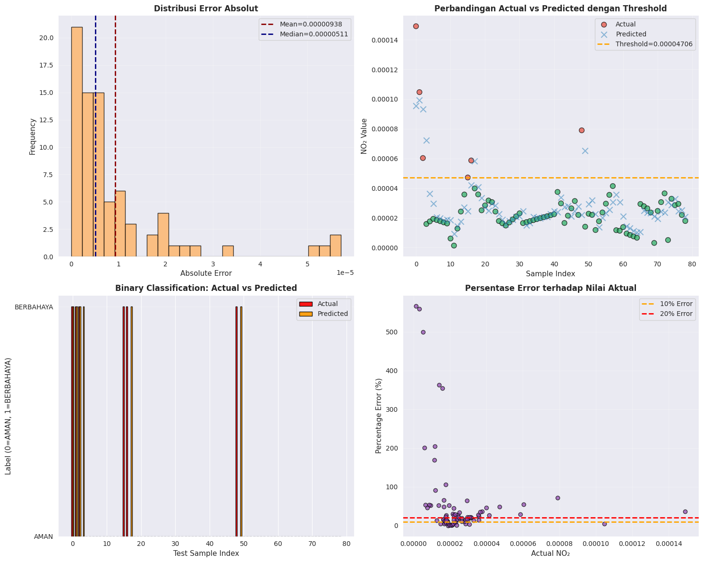
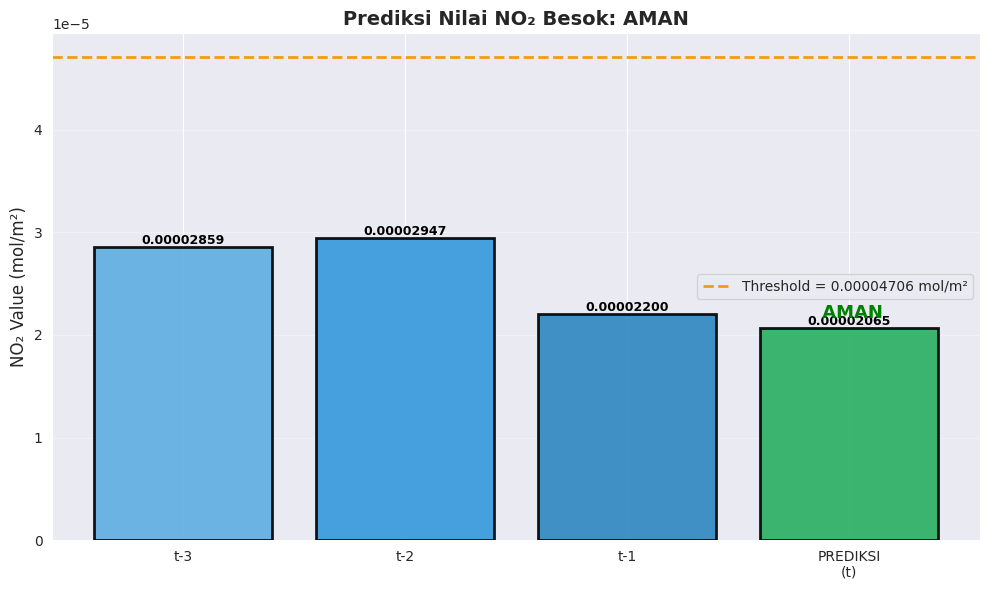

Prediksi Ambang Batas NO2 Satu Hari Kedepan#
Pada tugas kali ini bertujuan untuk memprediksi apakah konsentrasi No2 akan melebihi batas ambang satu hari ke depan, dimana letak lokasi yang saya ambil adalah Sekitas Kamal-Labang, Bangkalan, Madura. Dengan menggunakan data source Sentinel-5p (Copernicus Data Space) dengan metode KNN Classification (Binary: Aman/Berbahaya). Untuk masa periode yang saya ambil adalah Juli 2021- Juli 2022.
Install OpenEo#
pip install openeo
Requirement already satisfied: openeo in /usr/local/python/3.12.1/lib/python3.12/site-packages (0.45.0)
Requirement already satisfied: requests>=2.26.0 in /home/codespace/.local/lib/python3.12/site-packages (from openeo) (2.32.4)
Requirement already satisfied: urllib3>=1.9.0 in /home/codespace/.local/lib/python3.12/site-packages (from openeo) (2.5.0)
Requirement already satisfied: shapely>=1.6.4 in /usr/local/python/3.12.1/lib/python3.12/site-packages (from openeo) (2.1.2)
Requirement already satisfied: numpy>=1.17.0 in /usr/local/python/3.12.1/lib/python3.12/site-packages (from openeo) (1.26.4)
Requirement already satisfied: xarray<2025.01.2,>=0.12.3 in /usr/local/python/3.12.1/lib/python3.12/site-packages (from openeo) (2025.1.1)
Requirement already satisfied: pandas>0.20.0 in /usr/local/python/3.12.1/lib/python3.12/site-packages (from openeo) (2.1.4)
Requirement already satisfied: pystac>=1.5.0 in /usr/local/python/3.12.1/lib/python3.12/site-packages (from openeo) (1.14.1)
Requirement already satisfied: deprecated>=1.2.12 in /usr/local/python/3.12.1/lib/python3.12/site-packages (from openeo) (1.2.18)
Requirement already satisfied: packaging>=23.2 in /home/codespace/.local/lib/python3.12/site-packages (from xarray<2025.01.2,>=0.12.3->openeo) (25.0)
Requirement already satisfied: wrapt<2,>=1.10 in /usr/local/python/3.12.1/lib/python3.12/site-packages (from deprecated>=1.2.12->openeo) (1.17.3)
Requirement already satisfied: python-dateutil>=2.8.2 in /home/codespace/.local/lib/python3.12/site-packages (from pandas>0.20.0->openeo) (2.9.0.post0)
Requirement already satisfied: pytz>=2020.1 in /home/codespace/.local/lib/python3.12/site-packages (from pandas>0.20.0->openeo) (2025.2)
Requirement already satisfied: tzdata>=2022.1 in /home/codespace/.local/lib/python3.12/site-packages (from pandas>0.20.0->openeo) (2025.2)
Requirement already satisfied: six>=1.5 in /home/codespace/.local/lib/python3.12/site-packages (from python-dateutil>=2.8.2->pandas>0.20.0->openeo) (1.17.0)
Requirement already satisfied: charset_normalizer<4,>=2 in /home/codespace/.local/lib/python3.12/site-packages (from requests>=2.26.0->openeo) (3.4.2)
Requirement already satisfied: idna<4,>=2.5 in /home/codespace/.local/lib/python3.12/site-packages (from requests>=2.26.0->openeo) (3.10)
Requirement already satisfied: certifi>=2017.4.17 in /home/codespace/.local/lib/python3.12/site-packages (from requests>=2.26.0->openeo) (2025.7.9)
Note: you may need to restart the kernel to use updated packages.
Import Library#
import openeo
import pandas as pd
import numpy as np
import matplotlib.pyplot as plt
import seaborn as sns
import os
import time
import warnings
warnings.filterwarnings('ignore')
from sklearn.preprocessing import StandardScaler, MinMaxScaler
from sklearn.model_selection import train_test_split
from sklearn.neighbors import KNeighborsClassifier
from sklearn.metrics import (
accuracy_score, precision_score, recall_score, f1_score,
confusion_matrix, classification_report, roc_curve, auc,
roc_auc_score, ConfusionMatrixDisplay
)
sns.set_style("darkgrid")
plt.rcParams['figure.figsize'] = (12, 6)
print("Semua library berhasil diimport")
Semua library berhasil diimport
Data UnderStanding#
1.Pengumpulan Data (Data Collection)#
Dimana bersumber dari Sentinel-5p via OpenEo (Copernicus Data Space), dan untuk outputnya adalah sebuah file csv dengan data No2 harian untuk periode Juli 2021-Juli 2022.
print("="*70)
print("LANGKAH 1: PENGUMPULAN DATA ")
print("="*70)
# 1. Koneksi ke Copernicus Data Space
connection = openeo.connect("openeo.dataspace.copernicus.eu").authenticate_oidc()
# 2. Area of Interest (AOI) - Bangkalan, Madura
aoi = {
"type": "Polygon",
"coordinates": [
[
[112.72039971871624,-7.11744614362911],
[112.72039971871624,-7.156335253461791],
[112.78220716761746,-7.156335253461791],
[112.78220716761746,-7.11744614362911],
[112.72039971871624,-7.11744614362911],
]
],
}
# 3. Load data Sentinel-5P
s5p = connection.load_collection(
"SENTINEL_5P_L2",
spatial_extent={
"west": 112.72039971871624,
"south": -7.156335253461791,
"east": 112.78220716761746,
"north": -7.11744614362911,
},
temporal_extent=["2021-07-01", "2022-07-30"],
bands=["NO2"],
)
# 4. Mask nilai negatif
def mask_invalid(x):
return x < 0
s5p_masked = s5p.mask(s5p.apply(mask_invalid))
# 5. Agregasi temporal (harian)
daily_mean = s5p_masked.aggregate_temporal_period(period="day", reducer="mean")
# 6. Agregasi spasial (mean dalam AOI)
daily_mean_aoi = daily_mean.aggregate_spatial(geometries=aoi, reducer="mean")
# 7. Jalankan batch job
job = daily_mean_aoi.execute_batch(out_format="CSV")
print("\nMenunggu job OpenEO selesai...")
while True:
status = job.describe()["status"]
print(f"Status: {status}")
if status == "finished":
break
elif status == "error":
raise RuntimeError("Job gagal")
time.sleep(15)
# 8. Unduh hasil
results = job.get_results()
results.download_files("no2_results")
# 9. Baca file CSV
csv_files = [f for f in os.listdir("no2_results") if f.endswith(".csv")]
df = pd.read_csv(os.path.join("no2_results", csv_files[0]))
# 10. Data preprocessing
df["date"] = pd.to_datetime(df["date"])
df = df.sort_values("date").reset_index(drop=True)
df.to_csv("timeseries.csv", index=False)
print(f"\nData berhasil dikumpulkan")
print(f" - Total records: {len(df)}")
print(f" - Periode: {df['date'].min()} hingga {df['date'].max()}")
print(f" - File: timeseries.csv")
print(f"\nData pertama (5 baris):")
print(df.head())
======================================================================
LANGKAH 1: PENGUMPULAN DATA
======================================================================
Authenticated using refresh token.
0:00:00 Job 'j-2510231859204c798bad7496646f38c7': send 'start'
---------------------------------------------------------------------------
KeyboardInterrupt Traceback (most recent call last)
Cell In[3], line 49
46 daily_mean_aoi = daily_mean.aggregate_spatial(geometries=aoi, reducer="mean")
48 # 7. Jalankan batch job
---> 49 job = daily_mean_aoi.execute_batch(out_format="CSV")
50 print("\nMenunggu job OpenEO selesai...")
52 while True:
File /usr/local/python/3.12.1/lib/python3.12/site-packages/openeo/rest/vectorcube.py:391, in VectorCube.execute_batch(self, outputfile, out_format, title, description, plan, budget, print, max_poll_interval, connection_retry_interval, additional, job_options, validate, auto_add_save_result, show_error_logs, log_level, **format_options)
378 create_kwargs = {"auto_add_save_result": False}
380 job = res.create_job(
381 title=title,
382 description=description,
(...) 389 **create_kwargs,
390 )
--> 391 job.start_and_wait(
392 print=print,
393 max_poll_interval=max_poll_interval,
394 connection_retry_interval=connection_retry_interval,
395 show_error_logs=show_error_logs,
396 )
397 if outputfile is not None:
398 job.download_result(target=outputfile)
File /usr/local/python/3.12.1/lib/python3.12/site-packages/openeo/rest/job.py:324, in BatchJob.start_and_wait(self, print, max_poll_interval, connection_retry_interval, soft_error_max, show_error_logs, require_success)
322 # TODO: make `max_poll_interval`, `connection_retry_interval` class constants or instance properties?
323 print_status("send 'start'")
--> 324 self.start()
326 # TODO: also add `wait` method so you can track a job that already has started explicitly
327 # or just rename this method to `wait` and automatically do start if not started yet?
328
329 # Start with fast polling.
330 poll_interval = min(5, max_poll_interval)
File /usr/local/python/3.12.1/lib/python3.12/site-packages/openeo/rest/job.py:148, in BatchJob.start(self)
138 @openeo_endpoint("POST /jobs/{job_id}/results")
139 def start(self) -> BatchJob:
140 """
141 Start this batch job.
142
(...) 146 This method was previously called :py:meth:`start_job`.
147 """
--> 148 self.connection.post(f"/jobs/{self.job_id}/results", expected_status=202)
149 return self
File /usr/local/python/3.12.1/lib/python3.12/site-packages/openeo/rest/_connection.py:232, in RestApiConnection.post(self, path, json, **kwargs)
224 def post(self, path: str, json: Optional[dict] = None, **kwargs) -> Response:
225 """
226 Do POST request to REST API.
227
(...) 230 :return: response: Response
231 """
--> 232 return self.request("post", path=path, json=json, allow_redirects=False, **kwargs)
File /usr/local/python/3.12.1/lib/python3.12/site-packages/openeo/rest/connection.py:687, in Connection.request(self, method, path, headers, auth, check_error, expected_status, **kwargs)
680 return super(Connection, self).request(
681 method=method, path=path, headers=headers, auth=auth,
682 check_error=check_error, expected_status=expected_status, **kwargs,
683 )
685 try:
686 # Initial request attempt
--> 687 return _request()
688 except OpenEoApiError as api_exc:
689 if (
690 api_exc.http_status_code in {HTTP_401_UNAUTHORIZED, HTTP_403_FORBIDDEN}
691 and api_exc.code == "TokenInvalid"
692 ):
693 # Auth token expired: can we refresh?
File /usr/local/python/3.12.1/lib/python3.12/site-packages/openeo/rest/connection.py:680, in Connection.request.<locals>._request()
679 def _request():
--> 680 return super(Connection, self).request(
681 method=method, path=path, headers=headers, auth=auth,
682 check_error=check_error, expected_status=expected_status, **kwargs,
683 )
File /usr/local/python/3.12.1/lib/python3.12/site-packages/openeo/rest/_connection.py:118, in RestApiConnection.request(self, method, path, params, headers, auth, check_error, expected_status, **kwargs)
107 _log.debug(
108 "Request `{m} {u}` with params {p}, headers {h}, auth {a}, kwargs {k}".format(
109 m=method.upper(),
(...) 115 )
116 )
117 with ContextTimer() as timer:
--> 118 resp = self.session.request(
119 method=method,
120 url=url,
121 params=params,
122 headers=self._merged_headers(headers),
123 auth=auth,
124 timeout=kwargs.pop("timeout", self.default_timeout),
125 **kwargs,
126 )
127 if slow_response_threshold and timer.elapsed() > slow_response_threshold:
128 _log.warning(
129 "Slow response: `{m} {u}` took {e:.2f}s (>{t:.2f}s)".format(
130 m=method.upper(), u=str_truncate(url, width=64), e=timer.elapsed(), t=slow_response_threshold
131 )
132 )
File ~/.local/lib/python3.12/site-packages/requests/sessions.py:589, in Session.request(self, method, url, params, data, headers, cookies, files, auth, timeout, allow_redirects, proxies, hooks, stream, verify, cert, json)
584 send_kwargs = {
585 "timeout": timeout,
586 "allow_redirects": allow_redirects,
587 }
588 send_kwargs.update(settings)
--> 589 resp = self.send(prep, **send_kwargs)
591 return resp
File ~/.local/lib/python3.12/site-packages/requests/sessions.py:703, in Session.send(self, request, **kwargs)
700 start = preferred_clock()
702 # Send the request
--> 703 r = adapter.send(request, **kwargs)
705 # Total elapsed time of the request (approximately)
706 elapsed = preferred_clock() - start
File ~/.local/lib/python3.12/site-packages/requests/adapters.py:667, in HTTPAdapter.send(self, request, stream, timeout, verify, cert, proxies)
664 timeout = TimeoutSauce(connect=timeout, read=timeout)
666 try:
--> 667 resp = conn.urlopen(
668 method=request.method,
669 url=url,
670 body=request.body,
671 headers=request.headers,
672 redirect=False,
673 assert_same_host=False,
674 preload_content=False,
675 decode_content=False,
676 retries=self.max_retries,
677 timeout=timeout,
678 chunked=chunked,
679 )
681 except (ProtocolError, OSError) as err:
682 raise ConnectionError(err, request=request)
File ~/.local/lib/python3.12/site-packages/urllib3/connectionpool.py:787, in HTTPConnectionPool.urlopen(self, method, url, body, headers, retries, redirect, assert_same_host, timeout, pool_timeout, release_conn, chunked, body_pos, preload_content, decode_content, **response_kw)
784 response_conn = conn if not release_conn else None
786 # Make the request on the HTTPConnection object
--> 787 response = self._make_request(
788 conn,
789 method,
790 url,
791 timeout=timeout_obj,
792 body=body,
793 headers=headers,
794 chunked=chunked,
795 retries=retries,
796 response_conn=response_conn,
797 preload_content=preload_content,
798 decode_content=decode_content,
799 **response_kw,
800 )
802 # Everything went great!
803 clean_exit = True
File ~/.local/lib/python3.12/site-packages/urllib3/connectionpool.py:534, in HTTPConnectionPool._make_request(self, conn, method, url, body, headers, retries, timeout, chunked, response_conn, preload_content, decode_content, enforce_content_length)
532 # Receive the response from the server
533 try:
--> 534 response = conn.getresponse()
535 except (BaseSSLError, OSError) as e:
536 self._raise_timeout(err=e, url=url, timeout_value=read_timeout)
File ~/.local/lib/python3.12/site-packages/urllib3/connection.py:565, in HTTPConnection.getresponse(self)
562 _shutdown = getattr(self.sock, "shutdown", None)
564 # Get the response from http.client.HTTPConnection
--> 565 httplib_response = super().getresponse()
567 try:
568 assert_header_parsing(httplib_response.msg)
File /usr/local/python/3.12.1/lib/python3.12/http/client.py:1419, in HTTPConnection.getresponse(self)
1417 try:
1418 try:
-> 1419 response.begin()
1420 except ConnectionError:
1421 self.close()
File /usr/local/python/3.12.1/lib/python3.12/http/client.py:331, in HTTPResponse.begin(self)
329 # read until we get a non-100 response
330 while True:
--> 331 version, status, reason = self._read_status()
332 if status != CONTINUE:
333 break
File /usr/local/python/3.12.1/lib/python3.12/http/client.py:292, in HTTPResponse._read_status(self)
291 def _read_status(self):
--> 292 line = str(self.fp.readline(_MAXLINE + 1), "iso-8859-1")
293 if len(line) > _MAXLINE:
294 raise LineTooLong("status line")
File /usr/local/python/3.12.1/lib/python3.12/socket.py:707, in SocketIO.readinto(self, b)
705 while True:
706 try:
--> 707 return self._sock.recv_into(b)
708 except timeout:
709 self._timeout_occurred = True
File /usr/local/python/3.12.1/lib/python3.12/ssl.py:1253, in SSLSocket.recv_into(self, buffer, nbytes, flags)
1249 if flags != 0:
1250 raise ValueError(
1251 "non-zero flags not allowed in calls to recv_into() on %s" %
1252 self.__class__)
-> 1253 return self.read(nbytes, buffer)
1254 else:
1255 return super().recv_into(buffer, nbytes, flags)
File /usr/local/python/3.12.1/lib/python3.12/ssl.py:1105, in SSLSocket.read(self, len, buffer)
1103 try:
1104 if buffer is not None:
-> 1105 return self._sslobj.read(len, buffer)
1106 else:
1107 return self._sslobj.read(len)
KeyboardInterrupt:
Data Preparation#
2. Prepocessing-Missing Value#
# ======================== LANGKAH 2: PREPROCESSING - INTERPOLASI ==========================
print("\n" + "-"*70)
print("LANGKAH 2: PROSES PREPROCESSING DATA (INTERPOLASI NILAI HILANG)")
print("-"*70)
# Membaca dataset
data = pd.read_csv("timeseries.csv")
data["date"] = pd.to_datetime(data["date"])
data = data.sort_values(by="date").reset_index(drop=True)
# Mengecek jumlah nilai hilang sebelum interpolasi
n_missing_before = data["NO2"].isnull().sum()
persen_missing = (n_missing_before / len(data)) * 100
print(f"\nJumlah nilai hilang sebelum interpolasi: {n_missing_before} ({persen_missing:.2f}%)")
# Melakukan interpolasi linier dan pengisian nilai ujung
data["NO2"] = data["NO2"].interpolate(method="linear")
data["NO2"].fillna(method="ffill", inplace=True)
data["NO2"].fillna(method="bfill", inplace=True)
# Mengecek nilai hilang setelah interpolasi
n_missing_after = data["NO2"].isnull().sum()
print(f"Jumlah nilai hilang sesudah interpolasi: {n_missing_after}")
# Menampilkan ringkasan statistik
print("\nStatistik deskriptif nilai NO₂ setelah proses interpolasi:")
print(data["NO2"].describe())
# ============================ VISUALISASI HASIL INTERPOLASI ==============================
fig, (ax1, ax2) = plt.subplots(nrows=2, figsize=(14, 8))
# Plot time series
ax1.plot(data["date"], data["NO2"], color="navy", linewidth=1.2, label="NO₂ Interpolated")
ax1.set_title("Time Series NO₂ Setelah Interpolasi Linier", fontsize=12, fontweight="bold")
ax1.set_xlabel("Tanggal")
ax1.set_ylabel("Konsentrasi NO₂ (mol/m²)")
ax1.legend()
ax1.grid(alpha=0.3)
# Plot distribusi
ax2.hist(data["NO2"], bins=30, color="lightblue", edgecolor="black", alpha=0.8)
ax2.set_title("Distribusi Nilai NO₂ Setelah Interpolasi", fontsize=12, fontweight="bold")
ax2.set_xlabel("Konsentrasi NO₂ (mol/m²)")
ax2.set_ylabel("Frekuensi")
ax2.grid(axis="y", alpha=0.3)
plt.tight_layout()
plt.show()
print("\n Proses preprocessing selesai dengan sukses!")
----------------------------------------------------------------------
LANGKAH 2: PROSES PREPROCESSING DATA (INTERPOLASI NILAI HILANG)
----------------------------------------------------------------------
Jumlah nilai hilang sebelum interpolasi: 215 (54.43%)
Jumlah nilai hilang sesudah interpolasi: 0
Statistik deskriptif nilai NO₂ setelah proses interpolasi:
count 3.950000e+02
mean 3.648103e-05
std 2.537001e-05
min 2.094412e-08
25% 1.911616e-05
50% 2.870651e-05
75% 4.693880e-05
max 1.491192e-04
Name: NO2, dtype: float64

Proses preprocessing selesai dengan sukses!
3. Konversi Ke Supervised Learning#
# ======================= LANGKAH 3: KONVERSI KE SUPERVISED LEARNING =======================
print("\n" + "-"*70)
print("LANGKAH 3: TRANSFORMASI DATA TIME SERIES KE MODEL SUPERVISED LEARNING")
print("-"*70)
def convert_to_supervised(dataset, n_past=1, n_future=1, remove_na=True):
"""
Mengubah data deret waktu (time series) menjadi format supervised learning.
Contoh: memprediksi NO2(t) berdasarkan NO2(t-1), NO2(t-2), dst.
"""
df_temp = pd.DataFrame(dataset)
frame_list, col_labels = [], []
# Membuat kolom input (lag)
for step in range(n_past, 0, -1):
frame_list.append(df_temp.shift(step))
col_labels.append(f"NO2(t-{step})")
# Membuat kolom output (nilai target)
for step in range(0, n_future):
frame_list.append(df_temp.shift(-step))
if step == 0:
col_labels.append("NO2(t)")
else:
col_labels.append(f"NO2(t+{step})")
# Gabungkan semua kolom
merged = pd.concat(frame_list, axis=1)
merged.columns = col_labels
# Hapus baris dengan nilai NaN (karena hasil pergeseran)
if remove_na:
merged.dropna(inplace=True)
return merged
# Gunakan 3 lag (t-1, t-2, t-3)
lag_count = 3
supervised_data = convert_to_supervised(data[["NO2"]], n_past=lag_count, n_future=1)
print(f"\nData berhasil diubah menjadi format supervised learning dengan lag = {lag_count}")
print(f" • Total sampel : {len(supervised_data)}")
print(f" • Jumlah fitur : {lag_count} (dari t-1 sampai t-{lag_count})")
print(f" • Jumlah target: 1 (yaitu NO2(t))")
print("\nContoh 5 data pertama:")
print(supervised_data.head())
----------------------------------------------------------------------
LANGKAH 3: TRANSFORMASI DATA TIME SERIES KE MODEL SUPERVISED LEARNING
----------------------------------------------------------------------
Data berhasil diubah menjadi format supervised learning dengan lag = 3
• Total sampel : 392
• Jumlah fitur : 3 (dari t-1 sampai t-3)
• Jumlah target: 1 (yaitu NO2(t))
Contoh 5 data pertama:
NO2(t-3) NO2(t-2) NO2(t-1) NO2(t)
3 0.000041 0.000041 0.000021 0.000023
4 0.000041 0.000021 0.000023 0.000025
5 0.000021 0.000023 0.000025 0.000007
6 0.000023 0.000025 0.000007 0.000028
7 0.000025 0.000007 0.000028 0.000008
4. Normalisasi Data Menggunakan Standard Scaler#
# ============================= LANGKAH 4: NORMALISASI DATA ==============================
print("\n" + "-"*70)
print("LANGKAH 4: PROSES NORMALISASI DATA MENGGUNAKAN STANDARD SCALER")
print("-"*70)
# Inisialisasi StandardScaler (Z-score normalization)
z_scaler = StandardScaler()
print("\nMetode Normalisasi yang digunakan: StandardScaler (Z-score)")
print(" • Rumus: (x - mean) / std")
print(" • Rentang hasil: dari -∞ sampai +∞")
print(" • Hasil akhir memiliki mean ≈ 0 dan standar deviasi ≈ 1")
# Statistik sebelum normalisasi
print("\nRingkasan statistik SEBELUM normalisasi:")
print(supervised_data.describe())
# Pisahkan fitur (input) dan target
X_input = supervised_data.iloc[:, :-1] # Kolom t-1, t-2, t-3
y_output = supervised_data.iloc[:, -1] # Kolom target t
# Fit scaler hanya pada fitur input
z_scaler.fit(X_input)
# Transformasi data fitur
X_scaled = z_scaler.transform(X_input)
# Konversi kembali ke DataFrame agar mudah dibaca
norm_data = pd.DataFrame(X_scaled, columns=X_input.columns)
# Catatan: Kolom target (NO2(t)) tidak ikut dinormalisasi
print("\nNormalisasi selesai! (hanya pada fitur input)")
print("\nRingkasan statistik SESUDAH normalisasi:")
print(norm_data.describe())
# ============================== VISUALISASI HASIL =======================================
fig, (ax1, ax2) = plt.subplots(1, 2, figsize=(14, 5))
# Histogram sebelum normalisasi
ax1.hist(
supervised_data["NO2(t)"],
bins=30,
color="#FFB84C", # warna orange lembut
edgecolor="#5A5A5A",
alpha=0.8
)
ax1.set_title("Distribusi NO₂(t) - Original (Belum Dinormalisasi)", fontsize=12, fontweight="bold")
ax1.set_xlabel("NO₂(t)")
ax1.set_ylabel("Frekuensi")
ax1.grid(alpha=0.3)
# Histogram sesudah normalisasi
ax2.hist(
norm_data["NO2(t-1)"],
bins=30,
color="#3EC1D3", # biru toska cerah
edgecolor="#2A2A2A",
alpha=0.85
)
ax2.set_title("Distribusi NO₂(t-1) - Setelah Normalisasi (Z-score)", fontsize=12, fontweight="bold")
ax2.set_xlabel("NO₂(t-1) (Normalized)")
ax2.set_ylabel("Frekuensi")
ax2.grid(alpha=0.3)
plt.tight_layout()
plt.show()
print("\n Tahap normalisasi selesai dengan sukses!")
----------------------------------------------------------------------
LANGKAH 4: PROSES NORMALISASI DATA MENGGUNAKAN STANDARD SCALER
----------------------------------------------------------------------
Metode Normalisasi yang digunakan: StandardScaler (Z-score)
• Rumus: (x - mean) / std
• Rentang hasil: dari -∞ sampai +∞
• Hasil akhir memiliki mean ≈ 0 dan standar deviasi ≈ 1
Ringkasan statistik SEBELUM normalisasi:
NO2(t-3) NO2(t-2) NO2(t-1) NO2(t)
count 3.920000e+02 3.920000e+02 3.920000e+02 3.920000e+02
mean 3.658312e-05 3.655327e-05 3.650436e-05 3.649532e-05
std 2.543669e-05 2.543816e-05 2.544769e-05 2.545366e-05
min 2.094412e-08 2.094412e-08 2.094412e-08 2.094412e-08
25% 1.916454e-05 1.916454e-05 1.916454e-05 1.901708e-05
50% 2.882796e-05 2.882796e-05 2.865034e-05 2.865034e-05
75% 4.705907e-05 4.705907e-05 4.705907e-05 4.705907e-05
max 1.491192e-04 1.491192e-04 1.491192e-04 1.491192e-04
Normalisasi selesai! (hanya pada fitur input)
Ringkasan statistik SESUDAH normalisasi:
NO2(t-3) NO2(t-2) NO2(t-1)
count 3.920000e+02 3.920000e+02 3.920000e+02
mean -6.344132e-17 -1.812609e-17 -1.812609e-16
std 1.001278e+00 1.001278e+00 1.001278e+00
min -1.439216e+00 -1.437958e+00 -1.435496e+00
25% -6.856567e-01 -6.844423e-01 -6.822618e-01
50% -3.052705e-01 -3.040780e-01 -3.090284e-01
75% 4.123706e-01 4.135217e-01 4.152912e-01
max 4.429816e+00 4.430736e+00 4.431001e+00

Tahap normalisasi selesai dengan sukses!
5. Definisikan Batas Ambang (Threshold) dan Buat Labels#
print("\n" + "="*70)
print("LANGKAH 5: DEFINISIKAN THRESHOLD DAN BUAT LABELS")
print("="*70)
# Gunakan 75th percentile sebagai threshold
threshold = supervised_data["NO2(t)"].quantile(0.75)
print(f"\nThreshold Definition:")
print(f" - Menggunakan: 75th percentile")
print(f" - Nilai threshold: {threshold:.8f} mol/m²")
print(f"\n - Label 0 (AMAN): NO2 ≤ {threshold:.8f}")
print(f" - Label 1 (BERBAHAYA): NO2 > {threshold:.8f}")
# Buat binary labels untuk data asli (belum dinormalisasi)
binary_labels = (supervised_data["NO2(t)"] > threshold).astype(int)
# Tambahkan kolom label ke data yang sudah dinormalisasi (norm_data)
norm_data_with_labels = norm_data.copy()
norm_data_with_labels["label"] = binary_labels.values
# ======================================================
# 3️⃣ Tampilkan statistik distribusi label
# ======================================================
print(f"\nDistribusi Label:")
label_counts = norm_data_with_labels["label"].value_counts().sort_index()
print(f" - Label 0 (AMAN): {label_counts[0]} samples ({label_counts[0]/len(norm_data_with_labels)*100:.1f}%)")
print(f" - Label 1 (BERBAHAYA): {label_counts[1]} samples ({label_counts[1]/len(norm_data_with_labels)*100:.1f}%)")
# ======================================================
# 4️⃣ Visualisasi distribusi label
# ======================================================
fig, ax = plt.subplots(figsize=(10, 5))
labels_text = ['AMAN', 'BERBAHAYA']
colors_bar = ['#4CAF50', '#E53935'] # hijau lembut & merah terang
bars = ax.bar(labels_text, label_counts.values,
color=colors_bar, alpha=0.85, edgecolor='black', linewidth=2)
# Tambahkan efek visual
for bar in bars:
bar.set_linewidth(2)
bar.set_alpha(0.9)
# Judul dan label
ax.set_title('Distribusi Kelas (Binary Classification)', fontsize=14, fontweight='bold', color="#333")
ax.set_ylabel('Jumlah Samples', fontsize=12)
ax.set_xlabel('Kategori', fontsize=12)
ax.grid(axis='y', linestyle='--', alpha=0.3)
# Tampilkan nilai di atas bar
for i, v in enumerate(label_counts.values):
ax.text(i, v + 5, f"{v}", ha='center', fontweight='bold', fontsize=11, color="#222")
plt.tight_layout()
plt.show()
print("\n Labels berhasil dibuat dan ditambahkan ke dataset normalisasi!")
======================================================================
LANGKAH 5: DEFINISIKAN THRESHOLD DAN BUAT LABELS
======================================================================
Threshold Definition:
- Menggunakan: 75th percentile
- Nilai threshold: 0.00004706 mol/m²
- Label 0 (AMAN): NO2 ≤ 0.00004706
- Label 1 (BERBAHAYA): NO2 > 0.00004706
Distribusi Label:
- Label 0 (AMAN): 294 samples (75.0%)
- Label 1 (BERBAHAYA): 98 samples (25.0%)

Labels berhasil dibuat dan ditambahkan ke dataset normalisasi!
Modelling#
6. Pemodelan KNN Regression#
print("\n" + "="*75)
print(" LANGKAH 6: PEMODELAN KNN REGRESSION ")
print("="*75)
from sklearn.neighbors import KNeighborsRegressor
from sklearn.metrics import mean_squared_error, mean_absolute_error, r2_score
from sklearn.model_selection import train_test_split
# ========================== PERSIAPAN DATA ==========================
# Gunakan data hasil normalisasi (fitur input) dan target asli (NO2(t))
X = norm_data.values # fitur hasil normalisasi (t-1, t-2, t-3)
y = supervised_data["NO2(t)"].values # target asli (belum dinormalisasi)
print("\n Ringkasan Data:")
print(f" • Jumlah fitur input : {X.shape[1]} (lag: t-1, t-2, t-3)")
print(f" • Jumlah total sampel: {len(X)}")
print(f" • Rentang nilai target NO₂: {y.min():.8f} – {y.max():.8f} mol/m²")
# Pembagian data (80% train, 20% test)
X_train, X_test, y_train, y_test = train_test_split(
X, y, test_size=0.2, random_state=42, shuffle=False
)
print("\n Pembagian Data:")
print(f" • Data latih : {len(X_train)} sampel ({len(X_train)/len(X)*100:.1f}%)")
print(f" • Data uji : {len(X_test)} sampel ({len(X_test)/len(X)*100:.1f}%)")
# ========================== EKSPERIMEN NILAI K ==========================
k_values = [2, 3, 5, 7, 9, 11]
print("\n" + "-"*75)
print(" UJI COBA: VARIASI NILAI K PADA KNN REGRESSION")
print("-"*75)
results_k = []
for k in k_values:
knn_model = KNeighborsRegressor(n_neighbors=k, metric='euclidean')
knn_model.fit(X_train, y_train)
y_pred = knn_model.predict(X_test)
mse = mean_squared_error(y_test, y_pred)
rmse = np.sqrt(mse)
mae = mean_absolute_error(y_test, y_pred)
r2 = r2_score(y_test, y_pred)
results_k.append({
'k': k,
'RMSE': rmse,
'MAE': mae,
'R²': r2
})
print(f" ➤ K={k:<2d} | RMSE={rmse:.8f} | MAE={mae:.8f} | R²={r2:.4f}")
# Simpan hasil ke DataFrame
results_k_df = pd.DataFrame(results_k)
# Tentukan K terbaik (berdasarkan RMSE terkecil)
best_idx = results_k_df['RMSE'].idxmin()
best_k = int(results_k_df.loc[best_idx, 'k'])
best_rmse = results_k_df.loc[best_idx, 'RMSE']
best_r2 = results_k_df.loc[best_idx, 'R²']
print("\n Hasil Terbaik:")
print(f" • K optimal : {best_k}")
print(f" • RMSE terkecil : {best_rmse:.8f}")
print(f" • R² Score : {best_r2:.4f}")
# ========================== VISUALISASI HASIL ==========================
fig, axes = plt.subplots(1, 2, figsize=(15, 5))
# Plot RMSE dan MAE
axes[0].plot(results_k_df['k'], results_k_df['RMSE'], 'o-', lw=2, color='crimson', label='RMSE')
axes[0].plot(results_k_df['k'], results_k_df['MAE'], 's-', lw=2, color='orange', label='MAE')
axes[0].axvline(best_k, color='blue', linestyle='--', alpha=0.5, label=f'Best K={best_k}')
axes[0].set_title('Perbandingan RMSE & MAE terhadap Nilai K', fontsize=13, fontweight='bold')
axes[0].set_xlabel('Nilai K')
axes[0].set_ylabel('Error')
axes[0].legend()
axes[0].grid(alpha=0.3)
axes[0].set_xticks(k_values)
# Plot R²
axes[1].plot(results_k_df['k'], results_k_df['R²'], '^-', lw=2, color='seagreen', label='R² Score')
axes[1].axvline(best_k, color='blue', linestyle='--', alpha=0.5, label=f'Best K={best_k}')
axes[1].set_title('Performa R² terhadap Nilai K', fontsize=13, fontweight='bold')
axes[1].set_xlabel('Nilai K')
axes[1].set_ylabel('R² Score')
axes[1].legend()
axes[1].grid(alpha=0.3)
axes[1].set_xticks(k_values)
plt.tight_layout()
plt.show()
print(f"\n Proses KNN Regression selesai! Model terbaik menggunakan K = {best_k}")
===========================================================================
LANGKAH 6: PEMODELAN KNN REGRESSION
===========================================================================
Ringkasan Data:
• Jumlah fitur input : 3 (lag: t-1, t-2, t-3)
• Jumlah total sampel: 392
• Rentang nilai target NO₂: 0.00000002 – 0.00014912 mol/m²
Pembagian Data:
• Data latih : 313 sampel (79.8%)
• Data uji : 79 sampel (20.2%)
---------------------------------------------------------------------------
UJI COBA: VARIASI NILAI K PADA KNN REGRESSION
---------------------------------------------------------------------------
➤ K=2 | RMSE=0.00001909 | MAE=0.00001286 | R²=0.1558
➤ K=3 | RMSE=0.00001749 | MAE=0.00001114 | R²=0.2917
➤ K=5 | RMSE=0.00001678 | MAE=0.00001024 | R²=0.3478
➤ K=7 | RMSE=0.00001633 | MAE=0.00000977 | R²=0.3819
➤ K=9 | RMSE=0.00001566 | MAE=0.00000932 | R²=0.4317
➤ K=11 | RMSE=0.00001553 | MAE=0.00000938 | R²=0.4413
Hasil Terbaik:
• K optimal : 11
• RMSE terkecil : 0.00001553
• R² Score : 0.4413

Proses KNN Regression selesai! Model terbaik menggunakan K = 11
7. Evaluasi Regression & Penerapan Threshold#
print("\n" + "="*75)
print(" LANGKAH 7: EVALUASI REGRESSION & PENERAPAN THRESHOLD ")
print("="*75)
from sklearn.metrics import (
accuracy_score, precision_score, recall_score, f1_score,
confusion_matrix, ConfusionMatrixDisplay, classification_report
)
# ==================== LATIH MODEL AKHIR DENGAN K TERBAIK ====================
final_model = KNeighborsRegressor(n_neighbors=int(best_k), metric='euclidean')
final_model.fit(X_train, y_train)
# ==================== PREDIKSI NILAI NO2 (KONTINU) ====================
y_pred_regression = final_model.predict(X_test)
# Hitung metrik regresi
mse = mean_squared_error(y_test, y_pred_regression)
rmse = np.sqrt(mse)
mae = mean_absolute_error(y_test, y_pred_regression)
r2 = r2_score(y_test, y_pred_regression)
print(f"\n [A] METRIK REGRESI (K = {best_k}):")
print(f" • MSE : {mse:.10f}")
print(f" • RMSE : {rmse:.10f}")
print(f" • MAE : {mae:.10f}")
print(f" • R² : {r2:.4f}")
# ==================== PENERAPAN THRESHOLD ====================
y_test_binary = (y_test > threshold).astype(int)
y_pred_binary = (y_pred_regression > threshold).astype(int)
# Hitung metrik klasifikasi
accuracy = accuracy_score(y_test_binary, y_pred_binary)
precision = precision_score(y_test_binary, y_pred_binary, zero_division=0)
recall = recall_score(y_test_binary, y_pred_binary, zero_division=0)
f1 = f1_score(y_test_binary, y_pred_binary, zero_division=0)
print(f"\n [B] METRIK KLASIFIKASI (Setelah Threshold):")
print(f" • Threshold : {threshold:.8f} mol/m²")
print(f" • Accuracy : {accuracy:.4f}")
print(f" • Precision : {precision:.4f}")
print(f" • Recall : {recall:.4f}")
print(f" • F1-Score : {f1:.4f}")
# Confusion matrix
cm = confusion_matrix(y_test_binary, y_pred_binary)
tn, fp, fn, tp = cm.ravel()
print(f"\nConfusion Matrix Detail:")
print(f" • True Negatives (AMAN → AMAN) : {tn}")
print(f" • False Positives (AMAN → BERBAHAYA) : {fp}")
print(f" • False Negatives (BERBAHAYA → AMAN) : {fn}")
print(f" • True Positives (BERBAHAYA → BERBAHAYA): {tp}")
# ==================== VISUALISASI ====================
fig, axes = plt.subplots(2, 2, figsize=(15, 12))
# (1) Scatter: Actual vs Predicted
axes[0, 0].scatter(y_test, y_pred_regression, alpha=0.6, edgecolors='k')
axes[0, 0].plot([y_test.min(), y_test.max()], [y_test.min(), y_test.max()],
'r--', lw=2, label='Perfect Prediction')
axes[0, 0].axhline(y=threshold, color='orange', linestyle='--', lw=2)
axes[0, 0].axvline(x=threshold, color='orange', linestyle='--', lw=2,
label=f'Threshold = {threshold:.8f}')
axes[0, 0].set_xlabel('Actual NO₂', fontsize=11)
axes[0, 0].set_ylabel('Predicted NO₂', fontsize=11)
axes[0, 0].set_title(f'Actual vs Predicted NO₂ (K={best_k})', fontsize=12, fontweight='bold')
axes[0, 0].legend()
axes[0, 0].grid(True, alpha=0.3)
# (2) Residual Plot
residuals = y_test - y_pred_regression
axes[0, 1].scatter(y_pred_regression, residuals, alpha=0.6, edgecolors='k')
axes[0, 1].axhline(y=0, color='r', linestyle='--', lw=2)
axes[0, 1].set_xlabel('Predicted NO₂', fontsize=11)
axes[0, 1].set_ylabel('Residuals', fontsize=11)
axes[0, 1].set_title('Residual Plot', fontsize=12, fontweight='bold')
axes[0, 1].grid(True, alpha=0.3)
# (3) Time Series Comparison
test_idx = range(len(y_test))
axes[1, 0].plot(test_idx, y_test, label='Actual', color='royalblue', linewidth=2, marker='o', markersize=4)
axes[1, 0].plot(test_idx, y_pred_regression, label='Predicted', color='crimson', linewidth=2, marker='s', markersize=4, alpha=0.75)
axes[1, 0].axhline(y=threshold, color='orange', linestyle='--', linewidth=2, label='Threshold')
axes[1, 0].set_xlabel('Index Sampel Uji', fontsize=11)
axes[1, 0].set_ylabel('Nilai NO₂ (mol/m²)', fontsize=11)
axes[1, 0].set_title('Time Series: Actual vs Predicted NO₂', fontsize=12, fontweight='bold')
axes[1, 0].legend()
axes[1, 0].grid(True, alpha=0.3)
# (4) Confusion Matrix Plot
disp = ConfusionMatrixDisplay(confusion_matrix=cm, display_labels=['AMAN', 'BERBAHAYA'])
disp.plot(ax=axes[1, 1], cmap='Blues', values_format='d')
axes[1, 1].set_title('Confusion Matrix (Threshold Applied)', fontsize=12, fontweight='bold')
plt.tight_layout()
plt.show()
# ==================== LAPORAN AKHIR ====================
print("\n Classification Report:")
print(classification_report(y_test_binary, y_pred_binary, target_names=['AMAN', 'BERBAHAYA']))
print(f"\n Evaluasi selesai — model KNN Regression (K={best_k}) berhasil dievaluasi!")
===========================================================================
LANGKAH 7: EVALUASI REGRESSION & PENERAPAN THRESHOLD
===========================================================================
[A] METRIK REGRESI (K = 11):
• MSE : 0.0000000002
• RMSE : 0.0000155291
• MAE : 0.0000093762
• R² : 0.4413
[B] METRIK KLASIFIKASI (Setelah Threshold):
• Threshold : 0.00004706 mol/m²
• Accuracy : 0.9241
• Precision : 0.5000
• Recall : 0.5000
• F1-Score : 0.5000
Confusion Matrix Detail:
• True Negatives (AMAN → AMAN) : 70
• False Positives (AMAN → BERBAHAYA) : 3
• False Negatives (BERBAHAYA → AMAN) : 3
• True Positives (BERBAHAYA → BERBAHAYA): 3

Classification Report:
precision recall f1-score support
AMAN 0.96 0.96 0.96 73
BERBAHAYA 0.50 0.50 0.50 6
accuracy 0.92 79
macro avg 0.73 0.73 0.73 79
weighted avg 0.92 0.92 0.92 79
Evaluasi selesai — model KNN Regression (K=11) berhasil dievaluasi!
8. Visualisasi - Prediction Analysis#
print("\n" + "="*70)
print("LANGKAH 8: VISUALIsasi - PREDICTION ANALYSIS")
print("="*70)
# Analisis error distribution
errors = np.abs(y_test - y_pred_regression)
mean_error = np.mean(errors)
median_error = np.median(errors)
print(f"\nError Analysis:")
print(f" - Mean Absolute Error : {mean_error:.8f}")
print(f" - Median Absolute Error: {median_error:.8f}")
print(f" - Max Error : {errors.max():.8f}")
print(f" - Min Error : {errors.min():.8f}")
# ============================================================
# VISUALISASI
# ============================================================
fig, axes = plt.subplots(2, 2, figsize=(15, 12))
plt.subplots_adjust(hspace=0.3, wspace=0.25)
# Plot 1: Error Distribution
axes[0, 0].hist(errors, bins=25, edgecolor='black', alpha=0.8, color='#ffb366')
axes[0, 0].axvline(x=mean_error, color='darkred', linestyle='--', linewidth=2, label=f'Mean={mean_error:.8f}')
axes[0, 0].axvline(x=median_error, color='navy', linestyle='--', linewidth=2, label=f'Median={median_error:.8f}')
axes[0, 0].set_xlabel('Absolute Error', fontsize=11)
axes[0, 0].set_ylabel('Frequency', fontsize=11)
axes[0, 0].set_title('Distribusi Error Absolut', fontsize=12, fontweight='bold')
axes[0, 0].legend()
axes[0, 0].grid(True, alpha=0.3)
# Plot 2: Prediction vs Actual dengan Threshold
colors_scatter = ['#27ae60' if val <= threshold else '#e74c3c' for val in y_test]
axes[0, 1].scatter(range(len(y_test)), y_test, alpha=0.7, label='Actual', c=colors_scatter, edgecolors='k', s=60)
axes[0, 1].scatter(range(len(y_pred_regression)), y_pred_regression, alpha=0.5, label='Predicted', marker='x', s=80, c='#2980b9')
axes[0, 1].axhline(y=threshold, color='orange', linestyle='--', linewidth=2, label=f'Threshold={threshold:.8f}')
axes[0, 1].set_xlabel('Sample Index', fontsize=11)
axes[0, 1].set_ylabel('NO₂ Value', fontsize=11)
axes[0, 1].set_title('Perbandingan Actual vs Predicted dengan Threshold', fontsize=12, fontweight='bold')
axes[0, 1].legend()
axes[0, 1].grid(True, alpha=0.3)
# Plot 3: Binary Classification Result (warna kontras)
x_pos = np.arange(len(y_test_binary))
width = 0.35
# Gunakan warna yang benar-benar kontras dan mudah dibedakan
colors_actual = ['#0055ff' if x == 0 else '#ff0000' for x in y_test_binary] # Biru & Merah terang
colors_pred = ['#33cc33' if x == 0 else '#ff9900' for x in y_pred_binary] # Hijau & Oranye terang
axes[1, 0].bar(
x_pos - width/2, y_test_binary, width, label='Actual',
color=colors_actual, alpha=0.9, edgecolor='black'
)
axes[1, 0].bar(
x_pos + width/2, y_pred_binary, width, label='Predicted',
color=colors_pred, alpha=0.9, edgecolor='black'
)
axes[1, 0].set_xlabel('Test Sample Index', fontsize=11)
axes[1, 0].set_ylabel('Label (0=AMAN, 1=BERBAHAYA)', fontsize=11)
axes[1, 0].set_title('Binary Classification: Actual vs Predicted', fontsize=12, fontweight='bold')
axes[1, 0].set_yticks([0, 1])
axes[1, 0].set_yticklabels(['AMAN', 'BERBAHAYA'])
axes[1, 0].legend()
axes[1, 0].grid(True, alpha=0.3, axis='y')
# Plot 4: Percentage Error
percentage_error = (errors / y_test) * 100
axes[1, 1].scatter(y_test, percentage_error, alpha=0.7, edgecolors='k', c='#8e44ad')
axes[1, 1].axhline(y=10, color='orange', linestyle='--', linewidth=2, label='10% Error')
axes[1, 1].axhline(y=20, color='red', linestyle='--', linewidth=2, label='20% Error')
axes[1, 1].set_xlabel('Actual NO₂', fontsize=11)
axes[1, 1].set_ylabel('Percentage Error (%)', fontsize=11)
axes[1, 1].set_title('Persentase Error terhadap Nilai Aktual', fontsize=12, fontweight='bold')
axes[1, 1].legend()
axes[1, 1].grid(True, alpha=0.3)
plt.tight_layout()
plt.show()
print(f"\n Visualisasi analisis prediksi selesai.")
======================================================================
LANGKAH 8: VISUALIsasi - PREDICTION ANALYSIS
======================================================================
Error Analysis:
- Mean Absolute Error : 0.00000938
- Median Absolute Error: 0.00000511
- Max Error : 0.00005704
- Min Error : 0.00000009

Visualisasi analisis prediksi selesai.
9. Memprediksi Nilai NO2 Satu Hari Ke Depan#
print("\n" + "="*70)
print("LANGKAH 9: MEMPREDIKSI NILAI NO₂ SATU HARI KE DEPAN")
print("="*70)
# Ambil 3 hari terakhir dari supervised_data (data asli)
last_3_days_original = supervised_data[["NO2(t-3)", "NO2(t-2)", "NO2(t-1)"]].iloc[-1].values
print(f"\nData 3 hari terakhir (Original):")
print(f" - NO₂(t-3): {last_3_days_original[0]:.8f} mol/m²")
print(f" - NO₂(t-2): {last_3_days_original[1]:.8f} mol/m²")
print(f" - NO₂(t-1): {last_3_days_original[2]:.8f} mol/m²")
# Normalisasi menggunakan z_scaler
last_3_days_scaled = z_scaler.transform([last_3_days_original])[0]
print(f"\nData 3 hari terakhir (Normalized):")
print(f" - NO₂(t-3): {last_3_days_scaled[0]:.4f}")
print(f" - NO₂(t-2): {last_3_days_scaled[1]:.4f}")
print(f" - NO₂(t-1): {last_3_days_scaled[2]:.4f}")
# Siapkan data untuk prediksi
X_tomorrow = last_3_days_scaled.reshape(1, -1)
# Prediksi nilai NO₂ besok
pred_no2_value = final_model.predict(X_tomorrow)[0]
# Tentukan status berdasarkan threshold
pred_status = 'BERBAHAYA' if pred_no2_value > threshold else 'AMAN'
difference_from_threshold = pred_no2_value - threshold
percentage_diff = (difference_from_threshold / threshold) * 100
print("\n" + "="*70)
print("HASIL PREDIKSI NO₂ HARI BESOK (SATU HARI KE DEPAN)")
print("="*70)
print(f"\n[A] PREDIKSI NILAI NO₂ (Regression):")
print(f" - Predicted NO₂ : {pred_no2_value:.8f} mol/m²")
print(f"\n[B] THRESHOLD APPLICATION:")
print(f" - Threshold : {threshold:.8f} mol/m²")
print(f" - Status : {pred_status}")
print(f" - Difference : {difference_from_threshold:.8f} mol/m²")
print(f" - Percentage : {percentage_diff:+.2f}% dari threshold")
# Peringatan berdasarkan kondisi
if pred_status == 'BERBAHAYA':
if percentage_diff > 20:
print(f"\n⚠ PERINGATAN TINGGI: NO₂ diprediksi {percentage_diff:.1f}% DI ATAS threshold!")
print(f" → Prediksi SANGAT BERBAHAYA, segera ambil tindakan pencegahan!")
elif percentage_diff > 10:
print(f"\n⚠ PERINGATAN SEDANG: NO₂ diprediksi {percentage_diff:.1f}% di atas threshold.")
print(f" → Status BERBAHAYA, waspadai kualitas udara!")
else:
print(f"\n⚠ PERINGATAN: NO₂ diprediksi {percentage_diff:.1f}% di atas threshold.")
print(f" → Status BERBAHAYA, perlu monitoring rutin.")
else:
if abs(percentage_diff) < 5:
print(f"\n✔ HATI-HATI: NO₂ diprediksi hanya {abs(percentage_diff):.1f}% DI BAWAH threshold.")
print(f" → Status masih AMAN, namun mendekati batas ambang!")
else:
print(f"\n✔ AMAN: NO₂ diprediksi {abs(percentage_diff):.1f}% di bawah threshold.")
print(f" → Kualitas udara dalam kondisi aman.")
# ============================================================
# VISUALISASI
# ============================================================
fig, ax = plt.subplots(figsize=(10, 6))
# Data untuk visualisasi
days = ['t-3', 't-2', 't-1', 'PREDIKSI\n(t)']
values = list(last_3_days_original) + [pred_no2_value]
# 🎨 Warna batang lebih kontras dan berbeda
colors_bar = ['#5DADE2', '#3498DB', '#2E86C1', '#E74C3C' if pred_status == 'BERBAHAYA' else '#27AE60']
bars = ax.bar(
days, values, color=colors_bar, alpha=0.9,
edgecolor='black', linewidth=2, zorder=3
)
# Garis threshold
ax.axhline(
y=threshold, color='#F39C12', linestyle='--',
linewidth=2, label=f'Threshold = {threshold:.8f} mol/m²', zorder=2
)
# Label dan judul
ax.set_ylabel('NO₂ Value (mol/m²)', fontsize=12)
ax.set_title(f'Prediksi Nilai NO₂ Besok: {pred_status}', fontsize=14, fontweight='bold')
ax.legend(fontsize=10)
ax.grid(True, alpha=0.3, axis='y', zorder=0)
# Tambahkan label nilai di atas bar
for bar, val in zip(bars, values):
height = bar.get_height()
ax.text(
bar.get_x() + bar.get_width()/2, height + (0.00003 * threshold),
f'{val:.8f}', ha='center', va='bottom',
fontsize=9, fontweight='bold', color='black'
)
# Tambahkan teks status besar di atas bar terakhir
status_text = " BERBAHAYA" if pred_status == "BERBAHAYA" else " AMAN"
status_color = 'red' if pred_status == 'BERBAHAYA' else 'green'
ax.text(
len(days) - 1, pred_no2_value * 1.05,
status_text,
color=status_color,
fontsize=13, fontweight='bold', ha='center'
)
plt.tight_layout()
plt.show()
print("\n" + "="*70)
print("Prediksi selesai dan divisualisasikan dengan sukses!")
print("="*70)
======================================================================
LANGKAH 9: MEMPREDIKSI NILAI NO₂ SATU HARI KE DEPAN
======================================================================
Data 3 hari terakhir (Original):
- NO₂(t-3): 0.00002859 mol/m²
- NO₂(t-2): 0.00002947 mol/m²
- NO₂(t-1): 0.00002200 mol/m²
Data 3 hari terakhir (Normalized):
- NO₂(t-3): -0.3145
- NO₂(t-2): -0.2788
- NO₂(t-1): -0.5707
======================================================================
HASIL PREDIKSI NO₂ HARI BESOK (SATU HARI KE DEPAN)
======================================================================
[A] PREDIKSI NILAI NO₂ (Regression):
- Predicted NO₂ : 0.00002065 mol/m²
[B] THRESHOLD APPLICATION:
- Threshold : 0.00004706 mol/m²
- Status : AMAN
- Difference : -0.00002641 mol/m²
- Percentage : -56.12% dari threshold
✔ AMAN: NO₂ diprediksi 56.1% di bawah threshold.
→ Kualitas udara dalam kondisi aman.

======================================================================
Prediksi selesai dan divisualisasikan dengan sukses!
======================================================================